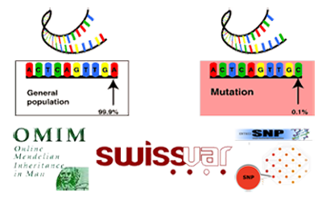
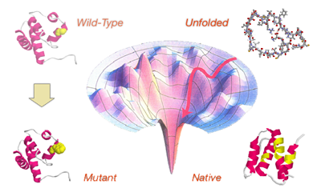
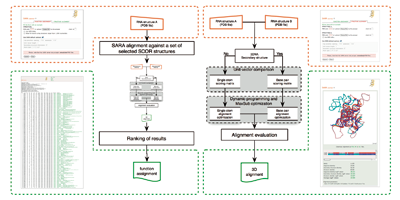

|
Biomolecules Folding and Disease |
|
|
|
The research activity of the BioFolD unit focuses on the following topics:
|
|
Mutations and Disease
|

Single Nucleotide Polymorphisms (SNPs) are an important source of human
genome variability. The non-synonymous SNPs occurring in coding regions
resulting in single amino acid polymorphisms (SAPs) may affect protein
function and lead to pathology. We are interested to study the
relationship between mutation and disease to develop machine learning
methods for the prediction of disease-related SAPs.
The input features of our methods are sequence, evolutive and functional
information. We have implemented PhD-SNP, a simple method based on
protein sequence and profile data. Recently, in
SNPs&GO, we improved the accuracy
of the detection of disease-related SAPs including protein functional
information. All the predictors has been tested using a cross-validation
procedure on a set of annotated SAPs selected from
SwissVar database. |
Protein Folding Stability and Kinetics
|
 Protein folding is a complex process that is responsible for the formation
of the protein tree-dimensional structure. In our work we study the protein
folding focusing on two main aspects: the protein stability and the folding
kinetics. We are interested to predict the effect of single point protein
mutation on protein stability. To measure the effect of the mutation, we
use the variation of the free energy change (ddG) upon mutation that can be
calculated as the difference of the free energy variation (dG) for the
mutant and the wild-type proteins. If we consider the unfolding free
energy we
have that more stable mutations correspond to positive ddG values and less
stable mutants to negative ddG. In the 2004 we developed
I-Mutant
a neural network binary classification method to predict if a mutation
increase or decrease the protein stability using protein structure.
In the 2005 the second version of the program
I-Mutant2.0 has been
implemented to predict ddG value using only sequence information.
All this methods has been tested using a cross-validation procedure on
a set of ddG values extracted from
Protherm database.
Currently a new version of the tool is under development. |
RNA and Protein Structure Comparison and Prediction
|
 The structure of biologically relevant macromolecules such as protein and
RNA is important to understand their function. According to this hypothesis
the structure is important to infer the function. Our group
is developing methods for structural alignment to
extract common feature between different molecules and use them to predict
unknown structure. In the 2008
SARA algorithm has been implemented to align RNA tree-dimensional
structures. A new pipeline using SARA program has been used to assign
RNA function using structure similarity. |